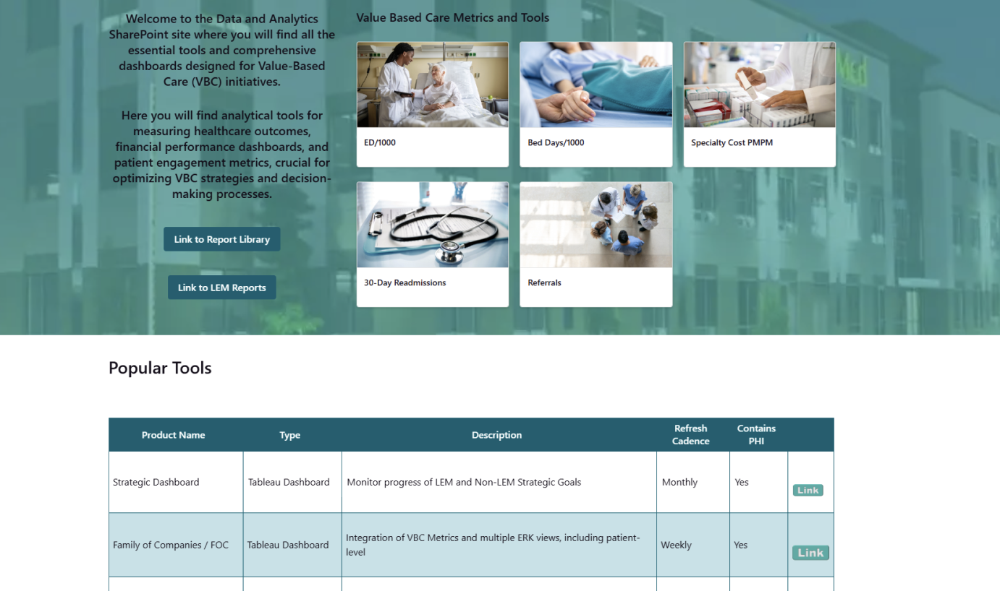

Designing a centralized Data & Analytics portal that helps healthcare teams find, access, and trust their internal dashboards.
AltaMed Health Services maintains a large ecosystem of internal dashboards used across clinical, operational, and organizational departments. Despite this rich data infrastructure, employees often struggled to find the right analytics resources when they needed them — dashboards were scattered across systems with no clear structure for discovery.
As part of a Cornell MPS × AltaMed collaboration, our team designed a centralized Data & Analytics portal built on SharePoint, with search, domain-based browsing, and an integrated access request workflow.

Current state — AltaMed's existing SharePoint interface prior to redesign
We conducted heuristic evaluations using think-aloud protocols with AltaMed users. Three insights shaped the design most:
Users navigated by department and clinical area — not by technical system names. The IA had to reflect their mental model, not the backend structure.
For users who already had a specific report in mind, search was the fastest path. Without it, discovery stalled immediately.
Showing ownership, last-updated date, and data source reduced hesitation before requesting access — users wanted to know a dashboard was maintained before investing time in it.
The portal was built around four discovery pathways: global search, category-based browsing, dashboard metadata, and an access request workflow. After testing, we simplified the homepage layout, renamed navigation labels to match user language, and added a Help / FAQ section for onboarding.
"Katherine demonstrated an exceptional blend of analytical thinking, user-centered design ability, technical skill, and professionalism."— Greg Townsend, SVP & Chief Data & Analytics Officer, AltaMed